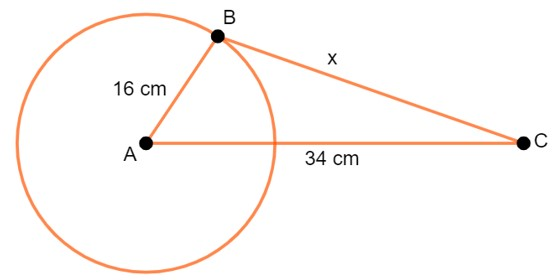
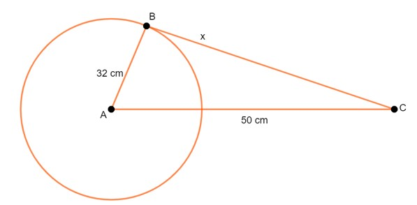

BAB 5
GARIS SINGGUNG LINGKARAN
Pengertian Garis Singgung Lingkaran

Gambar 33. Garis Singgung Lingkaran yang Menyinggung di Titik A
Gambar 33. di atas menunjukkan lingkaran yang berpusat di titik O dengan diameter AB. Garis g tegak lurus AB dan memotong lingkaran di dua titik. Jika g digeser terus menerus ke atas hingga menyentuh titik A maka akan diperoleh garis g' yang menyinggung lingkaran dan tegak lurus AB. Garis g' disebut garis singgung dan titik A disebut titik singgung. Uraian di atas menggambarkan definisi dari garis singgung lingkaran yaitu:
Garis singgung lingkaran adalah garis yang memotong lingkaran tepat di satu titik. Titik tersebut dinamakan titik singgung lingkaran. Setiap garis singgung lingkaran selalu tegak lurus terhadap jari-jari (diameter) yang melalui titik singgungnya.
Gambar 34. memperlihatkan bahwa garis g menyinggung lingkaran di titik A. Garis g tegak lurus jari-jari OA. Dengan kata lain, hanya terdapat satu buah garis singgung yang melalui satu titik pada lingkaran. Pada Gambar 7.2(b) , titik R terletak di luar lingkaran. Garis l melalui titik R dan menyinggung lingkaran di titik P, sehingga garis l tegak lurus jari-jari OP. Garis m melalui titik R dan menyinggung lingkaran di titik Q, sehingga garis m tegak lurus jari-jari OQ. Dengan demikian, dapat dibuat dua buah garis singgung melalui satu titik di luar lingkaran.
Panjang Garis Singgung Lingkaran

Gambar 35. Panjang Garis Singgung Lingkaran
Perhatikanlah Gambar 35. di atas. Garis AP dan BP adalah garis singgung lingkaran yang berpusat di titik O. Panjang OA = panjang OB = r = jari-jari lingkaran. Oleh karena garis singgung selalu tegak lurus terhadap jari-jari lingkaran maka panjang garis singgung AP dan BP dapat dihitung dengan menggunakan teorema Pythagoras.
Pada ΔOAB berlaku teorema Pythagoras, yaitu:
OA2 +AB2 =OB2
AB2 =OB2 -OA2
AB = √(OB2 - OA2)
AB = √(OB2 - r2)
Pada ΔOCB juga berlaku teorema Pythagoras, yaitu:
OC2 + BC2 = OB2
BC2 = OB2 - OC2
BC = √(OB2 - OC2)
BC = √(OB2 -r2)
Ternyata, AB = BC = √(OB2 - r2).
Uraian tersebut menggambarkan definisi berikut:
Contoh Soal:

Gambar 36. Garis Singgung Lingkaran
Perhatikanlah Gambar 36. Jika diketahui jari-jari lingkaran r = 6 cm dan OB = 10 cm, tentukan:
- panjang garis singgung AB
- luas ΔOAB
Jawab:
Pada ΔOAB berlaku teorema Pythagoras sehingga:
AB2 = OB2 - r2
AB = √(102 - 62)
BC = √64
BC = 8
Jadi, panjang AB adalah 8 cm.
-
Luas ΔOAB = ½ × OA × OB = ½ × 6 × 8 = 24 cm2
Ringkasan
- Garis singgung lingkaran adalah garis yang memotong lingkaran tepat di satu titik.
- Setiap garis singgung lingkaran selalu tegak lurus terhadap jari-jari (diameter) yang melalui titik singgungnya.
- Untuk menentukan panjang garis singgung suatu lingkaran berlaku Teorema Pythagoras.
- Kedua garis singgung lingkaran yang ditarik dari sebuah titik di luar lingkaran mempunyai panjang yang sama.
Latihan
Kerjakanlah soal-soal berikut ini dengan benar!
- Disebut sebagai titik apakah titik yang merupakan perpotongan garis pada lingkaran?
- Berapakah sudut yang terbentuk dari garis singgung lingkaran dan jari-jari atau diameter yang melalui titik singgungnya?
- Panjang jari-jari sebuah lingkaran 16 cm dan jarak titik di luar lingkaran dengan pusat adalah 34 cm. Berapakah panjang garis singgung lingkaran tersebut?
- Diketahui dua buah lingkaran dengan jari-jari lingkaran masing-masing R dan r. Jika jarak kedua titik pusat lingkaran j, rumus panjang garis singgung persekutuan dalam adalah...
- Berdasarkan soal nomor 3, jika jari-jari lingkarannya dijadikan 2 kali lipatnya dan jarak titik di luar lingkaran dengan pusat adalah 50 cm, maka berapakah panjang garis singgung tersebut?
Pembahasan:
- Titik singgung
- 90°
Misal ilustrasi lingkarannya adalah sebagai berikut.

Panjang garis singgung (x) dapat kit acari menggunakan rumus Pythagoras sebagai berikut.
x = √(342 - 162) = √900 = 30 cm
-
Jari-jari lingkaran besar = R
Jari-jari lingkaran kecil = r
Jarak titik pusat dua lingkaran = j
Maka: Panjang garis singgung persekutuan dalam = √(j2 - (R+r)2)
-
Ilustrasi:

Sehingga: Panjang garis singgung (x) dapat kita cari menggunakan rumus Pythagoras sebagai berikut.
x = √(502 - 322) = √1476 = 38,42 cm
Evaluasi
- Jelaskan yang dimaksud dengan garis singgung lingkaran!
Tentukanlah panjang garis singgung lingkaran di bawah ini jika jari-jarinya adalah 6 cm dan jarak titik di luar lingkaran dengan pusat adalah 8 cm.

- Buatlah ilustrasi garis singgung lingkaran 25 cm dan tentukanlah panjang jari-jari dan jarak titik di luar lingkaran dengan pusatnya!
- Mengapa untuk mencari panjang garis singgung lingkaran dapat menggunakan teorema Pythagoras?
- Tentukanlah jarak titik di luar lingkaran dengan pusatnya jika jari-jari lingkarannya 8 cm dan panjang garis singgung lingkarannya adalah 17 cm!